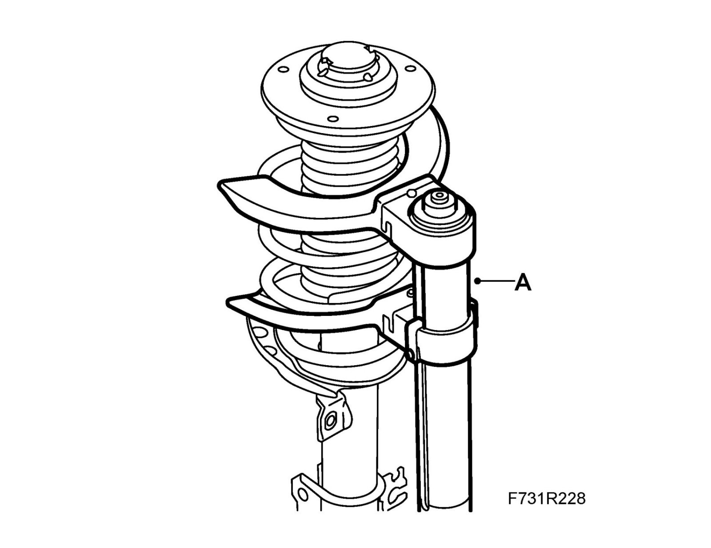
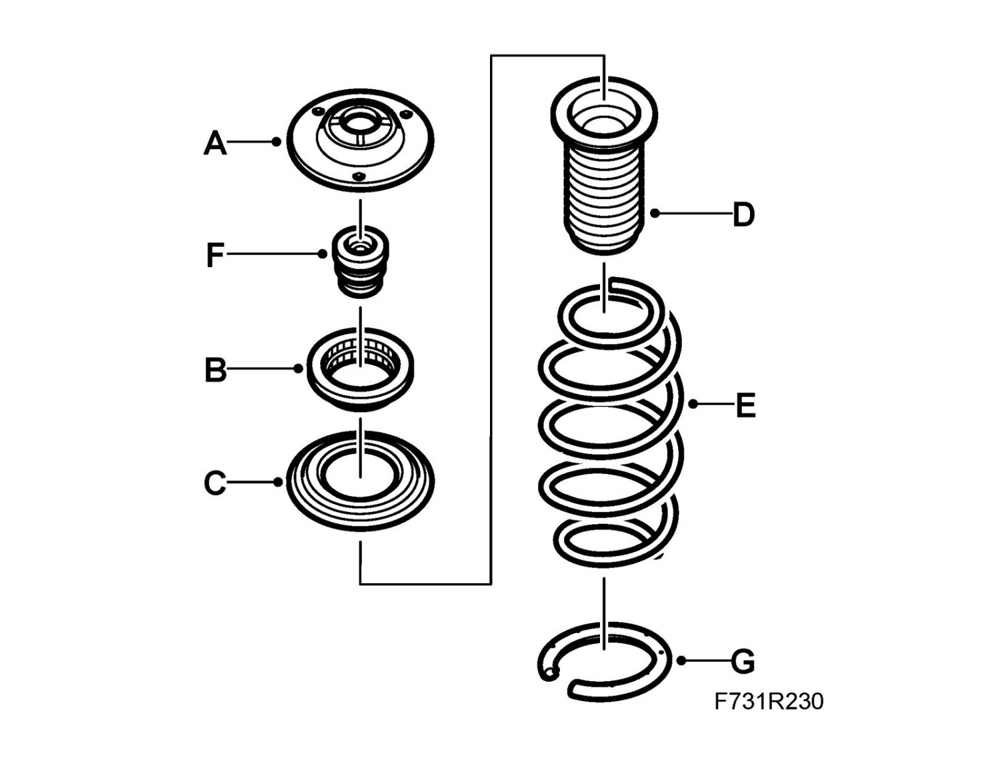
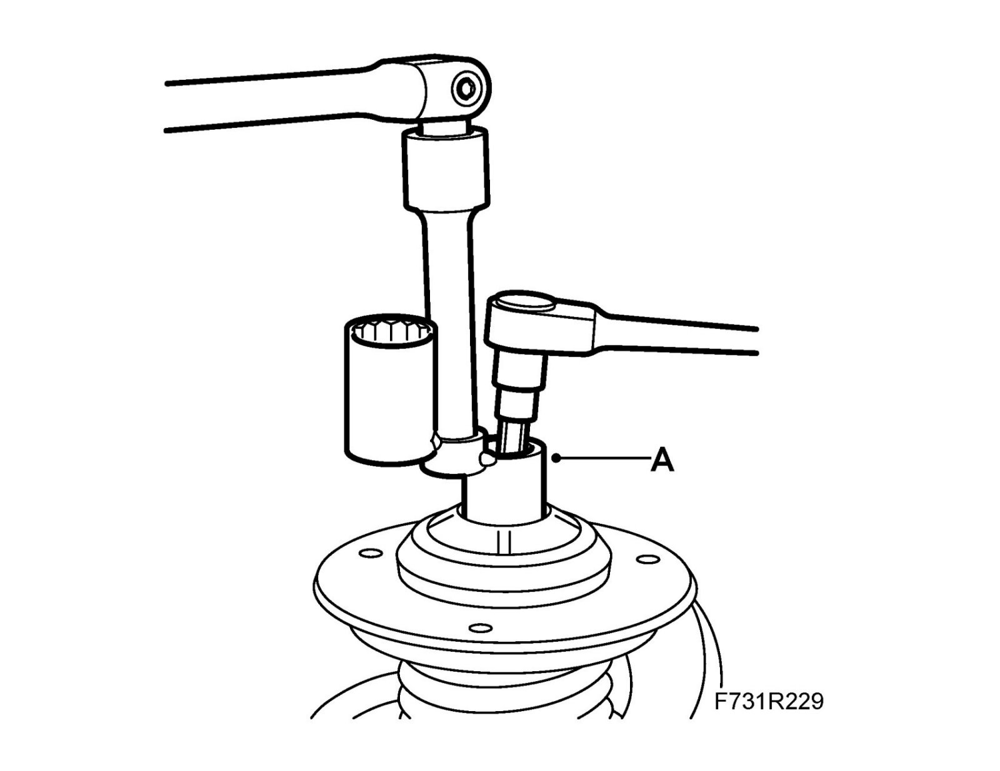

Overhaul
MacPherson strut, dismantling and assemblingThis method is used for replacement of springs, dampers, rubber dust excluders or support bearings.
Dismantling
1. Remove the MacPherson strut.
2. Place the MacPherson strut in a vice.
Important
Do not overtighten.
3. Compress the spring with a 88 18 791 Spring compressor (A).

4. Remove the protective cover from the top side of the MacPherson strut. Hold the piston rod and remove the nut with 89 96 613 Sleeve, MacPherson strut (A).

5. Remove the support bearing (A), thrust bearing (B), water shield (C) (certain cars), dust excluder (D), spring (E), bump stop (F) and protective hose (G).

To fit
1. Compress the spring with a 88 18 791 Spring compressor
2. Fit the protective hose (G), bump stop (F), spring (E), dust excluder (D), water shield (C) (certain cars), thrust bearing (B) and support bearing (A).
Make sure that the lower end of the spring abuts against the stop in the lower spring seat.
Note
Make sure that the lower end of the spring abuts against the stop in the lower spring seat.
The water shield must be fitted with the part number upwards.

3. Fit the nut.
Tightening torque 105 Nm (77 lbf ft)

4. Fit the protective cover.
5. Release the spring compressor.
6. Fit the MacPherson strut.